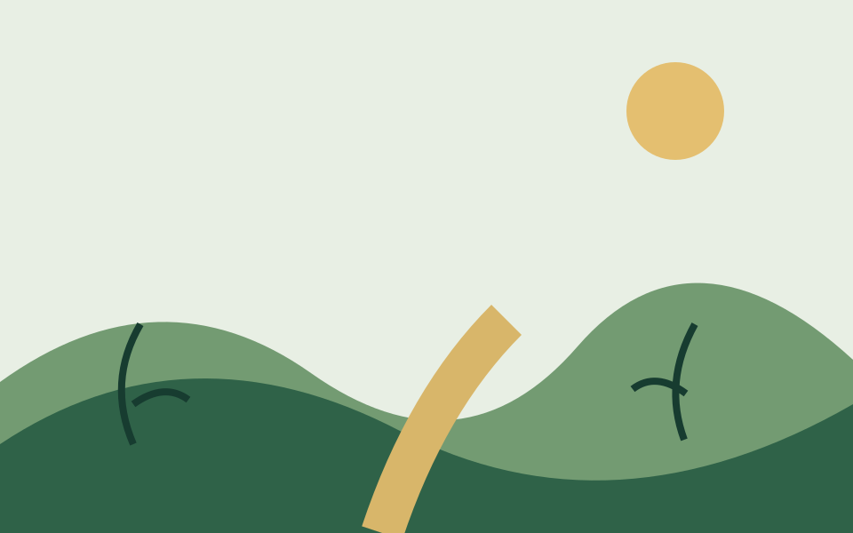

The Tortoise and the Hare
A boastful hare learns that steady effort can overcome speed without discipline.
Moral preview: Slow and steady effort can prevail.
Read storyRead an original retelling of the classic fable, explore its moral, and reflect on what patience, persistence, and discipline can accomplish.
The traditional story is in the public domain. This website’s retelling, commentary, organization, design, and original illustrations were created for Fable Garden.

A boastful hare learns that steady effort can overcome speed without discipline.
Moral preview: Slow and steady effort can prevail.
Read storyA fable is a brief traditional story that uses memorable characters and events to explore a choice, habit, or consequence. Its lesson is an invitation to reflect, not a rule that ends discussion.
A common moral is that steady effort may outperform careless talent.
The traditional story is public domain; this site’s original retelling and artwork are new.
No. This is an original retelling of a traditional fable commonly attributed to Aesop.
Yes. Readers may also reflect on pride, attention, and underestimating others.